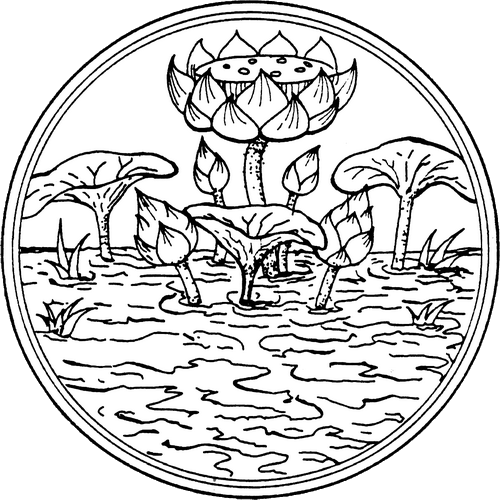
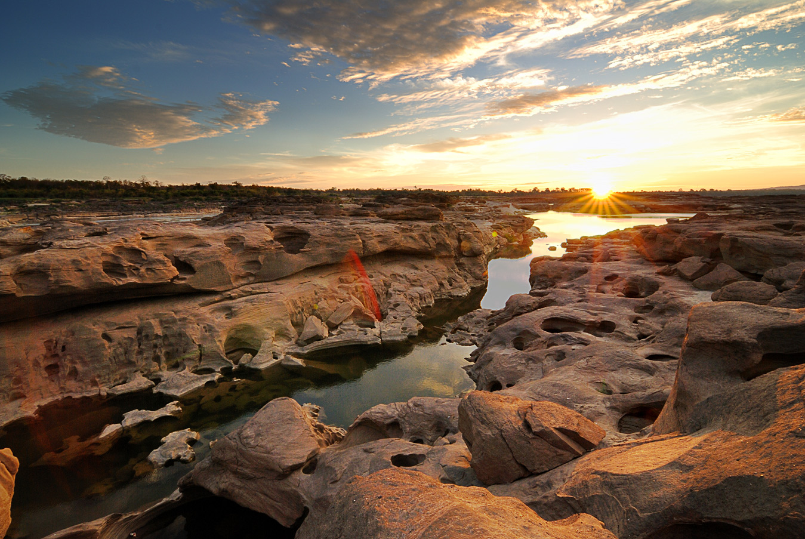
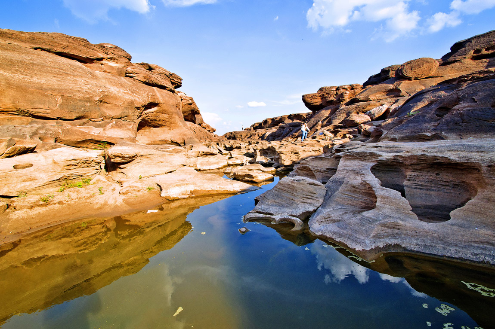
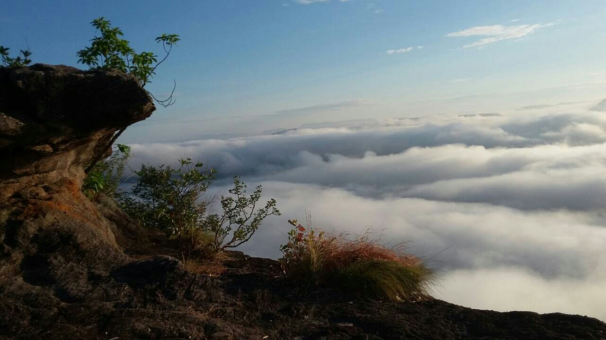
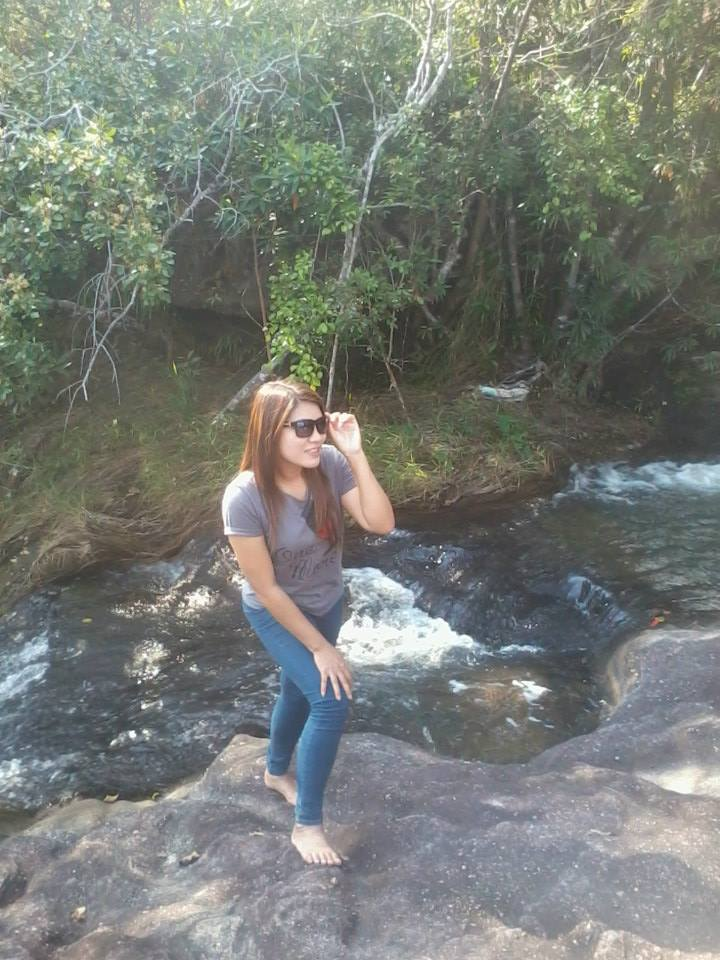

จังหวัดอุบลราชธานี

คำขวัญประจำจังหวัด
อุบลเมืองดอกบัวงาม แม่น้ำสองสี มีปลาแซ่บหลาย หาดทรายแก่งหิน ถิ่นไทยนักปราชญ์ ทวยราษฎร์ใฝ่ธรรม งามล้ำเทียนพรรษา ผาแต้มก่อนประวัติศาสตร์
ฉลาดภูมิปัญญาท้องถิ่น ดินแดนอนุสาวรีย์คนดีศรีอุบล
อุบลราชธานีเป็นเมืองใหญ่ที่มีประวัติศาสตร์ยาวนานกว่า 200 ปี ในอดีตบริเวณพื้นที่แถบนี้อยู่ภายใต้การปกครอง ของอาณาจักรเขมรหรือขอมโบราณ
ต่อมาอาณาจักรขอมเสื่อมอำนาจไป จนถึงสมัยกรุงศรีอยุธยา สมเด็จพระรามาธิบดีก็ได้ทรงรวบรวมดินแดนแถบนี้เข้าอยู่ภายใต้การปกครอง
แต่ต่อมาชุมชนดังกล่าวก็เกิดการแตกแยก แบ่งเป็นฝักฝ่ายอยู่เป็นเวลานับสิบปี จนกระทั่งสมเด็จพระเจ้าตากสินมหาราชได้ทรงรวบรวมดินแดนแถบนี้เป็น
อาณาจักรได้สำเร็จอีกครั้ง และได้สถาปนาอาณาจักรกรุงธนบุรีขึ้น ตรงกับที่ท้าวคำผง (พระประทุมวรราชสุริยวงศ์) แห่งเมืองเวียงจันทน์
ได้อพยพจากหนองบัวลำภูมาตั้งเมืองขึ้นใหม่ที่บริเวณดงอู่ผึ้งริมฝั่งแม่น้ำมูล บริเวณอำเภอ ดอนมดแดงในปัจจุบัน และต่อมาได้เกิดอุทกภัยขึ้น
จึงได้ย้ายชุมชนมาตั้งอยู่ที่บริเวณตัวจังหวัดในปัจจุบัน สมเด็จ พระเจ้าตากสินมหาราชโปรดเกล้าฯ พระราชทานนามเมืองใหม่นี้ว่า
“อุบลราชธานี” ขึ้นตรงต่อ กรุงเทพมหานคร และให้ท้าวคำผงเป็นเจ้าเมืองคนแรก โดยพระราชทานบรรดาศักดิ์ให้เป็น “พระปทุมวงศา”
ต่อมาในปี พ.ศ. 2335 ได้เปลี่ยนชื่อเมืองเป็น “มณฑลอุบลราชธานี” เป็นศูนย์กลางการบริหารของมณฑลอีสาน และในปี พ.ศ. 2468 มณฑลอุบลราชธานีก็ได้ถูกยุบโอนมาขึ้นกับมณฑลนครราชสีมา
จนถึงปี พ.ศ. 2476 ได้มีการยกเลิกระบบมณฑล เมืองอุบลราชธานีแยกตัวออกมาตั้งเป็น “จังหวัดอุบลราชธานี” เป็นจังหวัดที่ใหญ่ที่
สุดของประเทศไทย ถึงปี พ.ศ. 2515 อำเภอยโสธรและอำเภอใกล้เคียงที่อยู่ใน เขตปกครองของจังหวัด อุบลราชธานี ได้ถูกแบ่งออกไปตั้งเป็นจังหวัดยโสธร
และต่อมาในปี พ.ศ. 2536 อุบลราชธานีได้ถูกแบ่งพื้นที่ อีกครั้ง โดยแยกอำเภออำนาจเจริญและอำเภอใกล้เคียงออกไปตั้งเป็นเป็นจังหวัดอำนาจเจริญ
ปัจจุบันจังหวัดอุบลราชธานีแบ่งเขตการปกครองออกเป็น 20 อำเภอ 5 กิ่งอำเภอ ได้แก่ อำเภอเมืองอุบลราชธานี อำเภอวารินชำราบ อำเภอเดชอุดม
อำเภอบุณฑริก อำเภอนาจะหลวย อำเภอน้ำยืน อำเภอพิบูลมังสาหาร อำเภอโขงเจียม อำเภอศรีเมืองใหม่ อำเภอตระการพืชผล อำเภอเขมราฐ
อำเภอม่วงสามสิบ อำเภอเขื่องใน อำเภอกุดข้าวปุ้น อำเภอตาลสุม อำเภอโพธิ์ไทร อำเภอสำโรง อำเภอสิรินธร อำเภอดอนมดแดง อำเภอทุ่งศรีอุดม
กิ่งอำเภอนาเยีย กิ่งอำเภอนาตาล กิ่งอำเภอเหล่าเสือโก้ก กิ่งอำเภอสว่างวีระวงศ์ และกิ่งอำเภอน้ำขุ่น
สามพันโบก

รีวิววันนี้เดี๋ยวดิฉันจะพาเพื่อนๆมาเที่ยว แกรนด์แคนยอนเมืองไทยของเรากันนะค่ะ นั้นก็คือ “สามพันโบก” คำว่า “โบก” ของชาวลาวนั้น
แปลเป็นไทยได้ว่า “แอ่ง” “สามพันโบก” จึงหมายถึง ร่องหินหรือสภาพของหินที่เป็นหลุมหรือแอ่งจำนวนสามพันหลุมนั้นเอง เพื่อนๆจะได้พบกับความมหัศจรรย์
ความงดงาม และประติมากรรมธรรมชาติโบกหินของสามพันโบสามพันโบก กและที่อเมสซิ่งยิ่งกว่านี้ก็คือแต่ละปีสามพันโบกจะเผยโฉมโผล่พ้นน้ำออกมาให้ได้ชมความงามเพียงแค่ช่วงเดือนพฤศจิกายน
- เดือนพฤษภาคมเท่านั้น เพราะในช่วงฤดูน้ำหลาก ตั้งแต่เดือนมิถุนายน – ตุลาคม สามพันโบกจะซุกซ่อนความอัศจรรย์ไว้ใต้แม่น้ำโขงอย่างมิดชิด
ประกอบไปด้วย ผาหินรูปสะพานโค้ง หินหัวสุนัข สระมรกต บุ่งน้ำใส โบกรูปดาว โบกรูปหัวใจ และ โบกรูปมิกกี้เม้าส์ นอกจากนี้ก็ยังมีรูปวงกลม
วงรี รูปสัตว์ และรูปอื่นๆ อีกต่างๆ นานา สารพัดจะใช้จินตนาการไปแล้วแต่คนจะมอง ถ้าเพื่อนคนไหนสนใจจะมาเที่ยวขอแนะนำให้มานตอนเย็นๆนะค่ะ
ชักช่วงประมาณ 16.30 ต้นไป อากาศจะดีมากค่ะ เป็นที่เลืองชื่อลือนามถึงความมหัศจรรย์และความงดงาม ที่แต่ละปีจะเผยโฉมโผล่พ้นน้ำออกมาให้ได้ยลความงามเพียงแค่ช่วงเดือนพฤศจิกายน
- เดือนพฤษภาคมเท่านั้น เพราะในช่วงฤดูน้ำหลาก ตั้งแต่เดือนมิถุนายน – ตุลาคม สามพันโบกจะซุกซ่อนความอัศจรรย์ไว้ใต้แม่น้ำโขงอย่างมิดชิด

ผาชะนะได

วันนี้ดิฉันจะพาทุกท่านไปสัมผัสกับอากาศหนาว นอนนับดาว สูดกลิ่นหอมของดอกไม้ป่า ชมทะเลหมอกยามเช้าที่ผาชะนะได จังหวัดอุบลราชธานีค่ะ
ผาชะนะได เป็นภูเขาที่มีความสูงเหนือระดับน้ำทะเลปานกลางประมาณ 450 เมตร ส่วนของหน้าผาตั้งอยู่ทางด้านตะวันออกสุดของประเทศไทย
เป็นจุดเริ่มต้นคำนวณเวลาพระอาทิตย์ขึ้น ตั้งอยู่ในป่าดงนาทาม ในเขตอุทยานแห่งชาติผาแต้ม เป็นจุดที่มองเห็นพระอาทิตย์ขึ้นเป็นจุดแรกของประเทศไทย
ทิวทัศน์เบื้องล่างจะเป็นแม่น้ำโขงกั้นแบ่งเขตแดนระหว่างประเทศไทยและลาว เบื้องหน้าเป็นภูเขาแดนลาวที่วางเรียงรายสลับซับซ้อนมองดูสวยงาม
ฤดูหนาวนักท่องเที่ยวจะได้สัมผัสกับความสวยงามของทะเลหมอกเหนือลำน้ำโขงค่ะ เหมาะสำหรับผู้ที่ชอบความท้าทายให้ออกไปยืนถ่ายรูปและชมวิวของฝั่งประเทศลาวผากำปั่นและยังมีสถานที่ที่น่าสนใจอีก
ถ้าเพื่อนๆคนไหนสนใจที่จะมาเที่ยวขอแนะนำให้มาช่วงปลายฝนต้นหนาว ช่วง (ตุลาคม-ธันวาคม) จะมีทะเลหมอกให้ชมสลับกับเทือกเขาที่สลับซับซ้อนทางฝั่งประเทศลาว
ท่ามกลางดงดอกไม้ป่านานาชนิดค่ะ
ข้อมูลติดต่อ
ททท. สำนักงานอุบลราชธานี
พื้นที่รับผิดชอบ: อุบลราชธานี,อำนาจเจริญ,ยโสธร
264/1 ถ.เขื่อนธานี อ.เมือง จ.อุบลราธานี 34000
โทรศัพท์. 0 4524 3770 , 0 4525 0714
ข้อมูลผู้จัดทำ

นางสาวกรรณิการ์ ทานะสิงห์ รหัสประจำตัว 5596016419